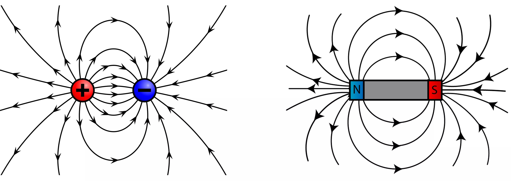

Электродина́мика — раздел физики, изучающий электромагнитное поле в наиболее общем случае (то есть, рассматриваются переменные поля, зависящие от времени) и его взаимодействие с телами.

Классическая электродинамика описывает все свойства электромагнитного поля и принципы его взаимосвязи с другими физическими элементами, которые несут определенный электрический заряд. Это действие можно определить посредством уравнений Максвелла, и выражения мощности Лоренца. При этом всегда применяются такие главные понятия электродинамики как: электромагнитное поле, электромагнитный потенциал, электрический заряд и вектор Пойнтинга.
Электромагнитные взаимосвязи относятся к числу самых важных действий в природе. Силы их упругости и трения, давление газа и жидкости можно свести к единому показателю электромагнитной силы между элементами вещества. Сами взаимодействия в электродинамике уже не могут образоваться в более глубоких формах взаимодействий.
Неподвижные заряды не могут образовывать магнитное поля, следовательно, в этом аспекте необходимо говорить только о свойствах самого электрическом поле.
Главными характеристиками поля в электродинамике являются:
1. электрический заряд может создавать мощное поле вокруг себя;
2. электродинамика не нуждается в какой-то конкретной среде и может возникать в веществе и в вакууме, является хорошей альтернативной формой существования всей материи;
3. электрическое поле является первичным физическим объектом, которое устанавливает законы поведения динамики процессов в электрической цепи.